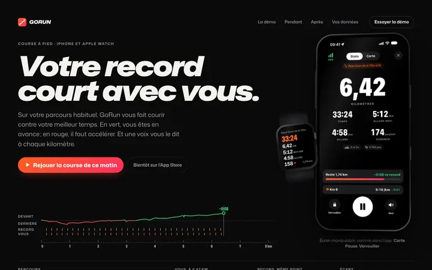
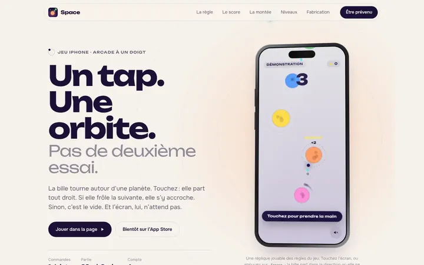
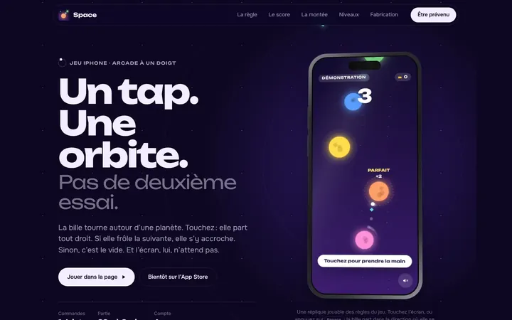
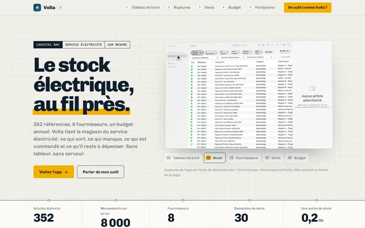
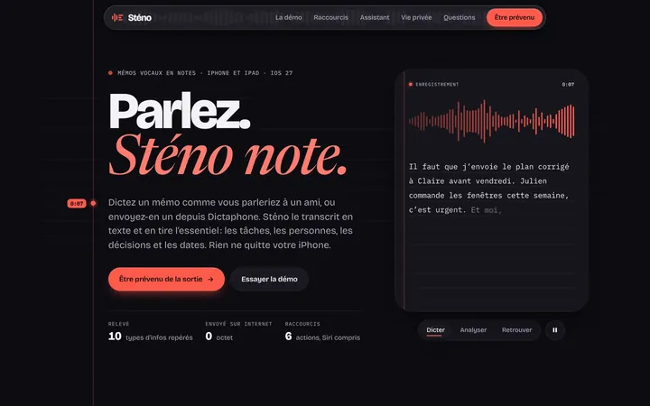
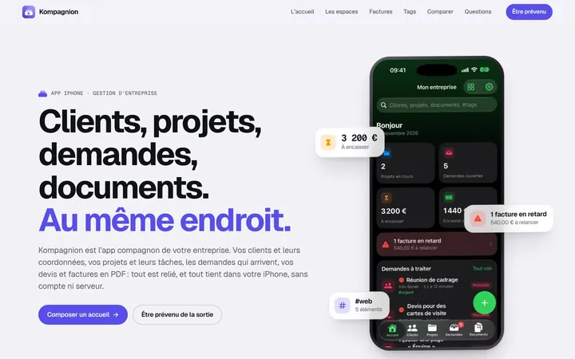
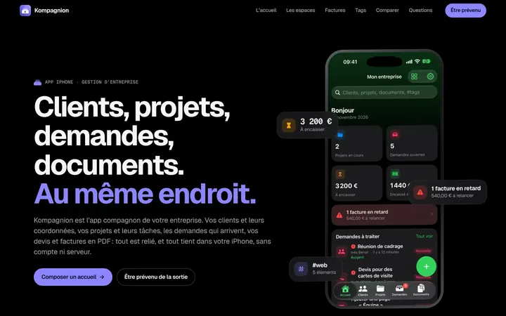

L’écran d’accueil du studioTouchez une app pour l’ouvrir
02Applications · iPhone, iPad, Mac et web
Des applications et des logiciels sur mesure, du premier écran à l’App Store.
Une app pour vos clients ou un outil pour votre équipe : native en Swift sur iPhone, iPad, Apple Watch et Mac, ou web pour fonctionner sur tous les appareils. Conçue et codée sans sous-traitance.
- Plateformes
- iPhone, iPad, Watch, Mac, web
- Langages
- Swift, SwiftUI, TypeScript
- Délai
- 1 à 4 mois selon l’app
- Devis
- gratuit, sous 24 h
L’écran d’accueil du studioTouchez une app pour l’ouvrir
01Ce que nous créons
Une app pour chaque écran, et le site qui va avec.
Natives quand l’app vit sur les appareils Apple, web quand elle doit tourner partout.
- 01
Apps pour iPhone et iPad
En Swift et SwiftUI : fluides, légères, avec widgets, notifications, raccourcis Siri et partage.
- 02
Au poignet, sur Apple Watch
Une app qui suit l’iPhone : séance de sport, rappels, complications sur le cadran.
- 03
Logiciels métier sur Mac
L’outil taillé pour votre façon de travailler : stock, devis, budget, traitement de fichiers.
- 04
Applications web
Espace client, tableau de bord, outil interne : sur n’importe quel appareil, sans installation.
- 05
Jeux mobiles
Des jeux simples, nerveux et soignés pour iPhone, jouables d’un doigt.
- 06
Le site de votre app
Chaque app du studio a son site, avec une démo dans la page. La vôtre peut avoir le sien.
02Réalisations
Huit apps conçues ici, chacune avec son site et sa démo.
Captures réelles. Les apps iPhone arrivent bientôt sur l’App Store.
-


GoRun
App iPhone et Apple Watch · Course à piedEssayer la démoGoRun, l’app de course à pied qui vous fait courir contre votre record.
SwiftUI, HealthKit, watchOS, Live Activities
-



Space
Jeu iPhone · Arcade à un doigtJouer dans la pageSpace, le jeu d’arcade à un doigt où chaque tap envoie la bille d’une orbite à l’autre.
SwiftUI, SpriteKit, AVFoundation
-


MTX Viewer
App iPhone et iPad · Développement webEssayer la démoMTX Viewer vérifie qu’un site web s’affiche bien partout, depuis un iPhone.
SwiftUI, WebKit
-



Volta
Logiciel Mac sur mesure · Gestion de stockVisiter l’appVolta tient le stock, les devis et le budget d’un service électricité, sur un Mac.
SwiftUI, Swift Charts, SQLite (GRDB)
-


Triade
App iPhone et iPad · BureautiqueEssayer la démoTriade réunit texte, tableur et présentation dans une seule app, même sans Internet.
SwiftUI, UIKit, Foundation Models, App Intents
-



Sténo
App iPhone et iPad · Prise de notesEssayer la démoSténo transforme vos mémos vocaux en notes claires et en tâches à faire.
SwiftUI, Foundation Models, SpeechAnalyzer, App Intents, WidgetKit
-


Mue
Utilitaire Mac · Conversion de fichiersEssayer le gesteMue convertit, retouche et range vos fichiers d’un seul geste, sans quitter le Mac.
Swift, SwiftUI, AppKit, AVFoundation, PDFKit
-



Kompagnion
App iPhone · Gestion d’entrepriseEssayer la démoKompagnion réunit clients, projets, demandes et factures dans votre iPhone.
SwiftUI, SwiftData, PDFKit, Liquid Glass
03Méthode
Vous essayez l’app sur votre téléphone à chaque étape.
Rien n’est livré sans avoir été testé par vous.
- 1
Cadrage
1 heure · gratuit · en visio si besoin
Ce que l’app doit faire, pour qui, sur quels appareils. On décide ce qui entre dans la première version, et vous recevez le devis à prix fixe sous 24 h.
- 2
Maquette interactive
1 à 2 semaines
Les écrans principaux, cliquables, à essayer et à valider avant la moindre ligne de code.
- 3
Développement
Par étapes de deux semaines
Une version de test à chaque étape, installée sur votre iPhone avec TestFlight.
- 4
Publication
App Store
Fiche, captures, textes, données de confidentialité, validation par Apple : nous nous en occupons, sur votre compte.
- 5
Suivi
À la demande ou au forfait
Corrections, compatibilité avec chaque nouvelle version d’iOS, nouvelles fonctions.
04Devis
Un prix fixe, calculé sur votre app.
Chaque app est chiffrée après le cadrage gratuit : devis sous 24 h, réalisation en 1 à 4 mois. Ce qui fait varier le prix :
- Le nombre d’écrans et de parcours à concevoir
- Les appareils visés : iPhone, iPad, Apple Watch, Mac ou navigateur
- Les comptes, la synchronisation entre appareils et les paiements
- Les liens avec vos outils, Apple Santé ou un serveur
- La publication sur l’App Store et le suivi après la sortie
À prévoir en plus : le compte Apple Developer, à votre nom (99 € par an), et pour une app connectée un serveur, souvent quelques dizaines d’euros par mois. Paiement échelonné selon les étapes.
05Questions
Questions fréquentes
Une autre question ? Écrivez-nous, même sans vocabulaire technique.
Combien coûte une application iPhone ?
Le prix dépend surtout du nombre d’écrans et de ce que l’app doit relier (comptes, synchronisation, paiements, Apple Watch). Il est fixé par écrit après le cadrage gratuit et la maquette, avec un devis sous 24 h.
Combien de temps pour créer une application ?
De un à quatre mois selon l’app, maquette comprise, puis quelques jours pour la validation par Apple. Le calendrier, découpé en étapes de deux semaines, est écrit dans le devis.
Développez-vous aussi pour Android ?
Le studio est spécialisé dans les appareils Apple, où il écrit des apps natives. Pour toucher aussi Android, une application web installable depuis le navigateur est souvent la bonne réponse. Si une app Android native est indispensable dès le départ, nous vous le dirons franchement pendant le cadrage.
Qui est propriétaire de l’application et du code ?
Vous. L’app est publiée sur votre compte Apple Developer, à votre nom, et le code source vous est remis. Vous restez libre de la faire évoluer avec qui vous voulez.
Vous occupez-vous de la publication sur l’App Store ?
Oui : fiche de l’app, captures, textes, informations de confidentialité et envoi à Apple. La validation prend souvent un à deux jours ; si Apple demande une modification, elle est faite sans supplément.
Mon app peut-elle utiliser l’intelligence artificielle ?
Oui. Sténo et Triade utilisent Apple Intelligence directement sur l’iPhone, sans envoyer vos données ailleurs. D’autres usages passent par un modèle en ligne ou installé chez vous : voir le pôle IA.
Et après la sortie de l’app ?
Trois mois de garantie après la publication. Ensuite, un suivi au forfait ou à la demande : corrections, compatibilité avec la nouvelle version d’iOS de chaque automne, nouvelles fonctions.
Pouvez-vous reprendre une app existante ?
Oui, après un audit du code. Une app en Swift ou SwiftUI se reprend facilement ; une app plus ancienne ou écrite avec un autre outil peut demander une réécriture partielle, chiffrée après l’audit.
Contact
Parlons de votre app.
Une idée, même floue, suffit. Dites-nous à quoi servirait l’app, pour qui, sur quels appareils : le cadrage d’une heure est gratuit.